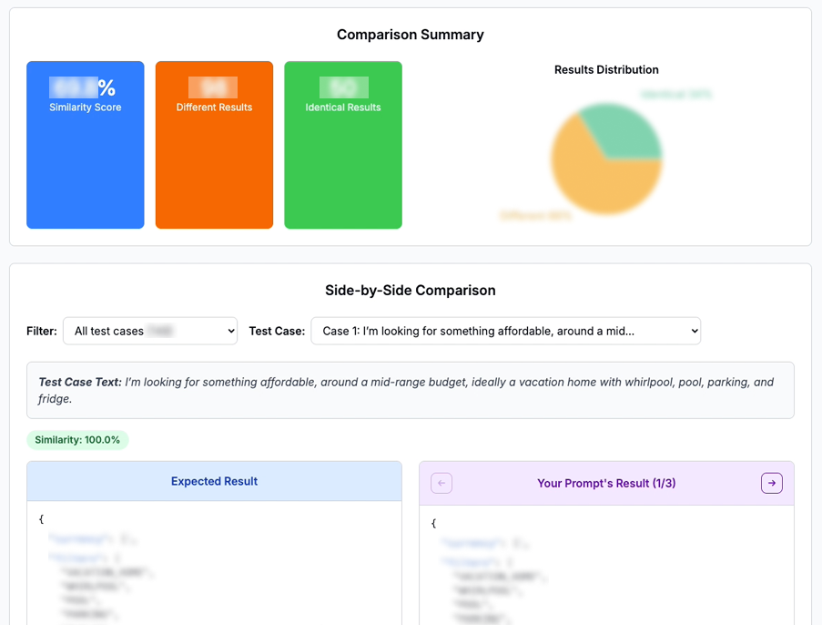
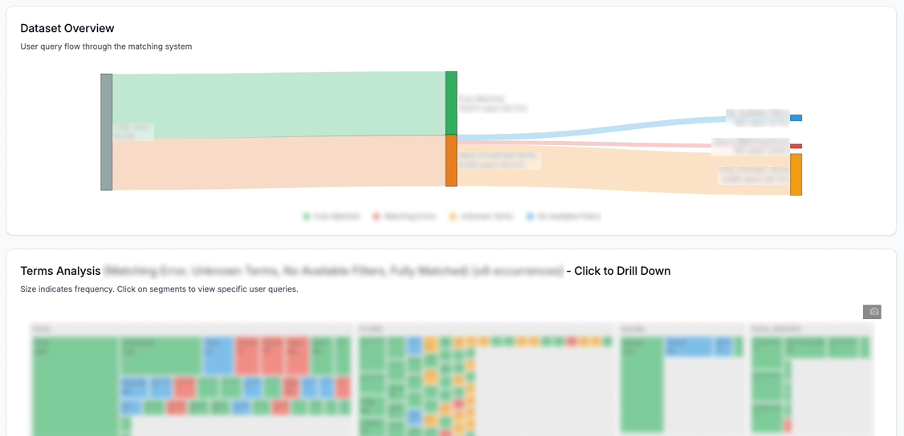

Overview
Instead of manually selecting filters one by one, users could type what they wanted and let the system interpret the request, map it to available website filters, and update the results.
"I want a place with a pool, close to the beach, and pets allowed."
The goal was to make filtering feel more natural and reduce the effort users needed to find suitable results.
Problem
Website filters are structured, but users describe their needs in flexible and messy ways. A user might write "quiet place near the beach," "dog-friendly with garden," or "romantic apartment with sea view."
The challenge was translating those natural language requests into the right filter combinations. If the AI misunderstood the request, users could see irrelevant results and lose trust in the feature.
Solution
We built a flow where users type what they are looking for, the AI interprets the request, the system maps it to available filters, and relevant filters are applied to update the results.
User input
Users describe the place they want in their own words instead of starting from a long filter list.
AI interpretation
The request is interpreted and matched against available website filters.
Filter application
Relevant filters are applied and users see updated results immediately.
Making AI output easier to test
Prompt testing was one of the biggest challenges. Checking AI outputs manually was slow and inconsistent, especially when testing many user inputs across prompt versions.
I created a prompt comparison workflow that compared user input, expected filter-mapping result, AI-generated result, and similarity between expected and actual output.

I also prepared benchmark answers for representative test cases. These worked as the expected outputs, so we could evaluate whether the model was mapping user intent correctly.
Metrics
I focused on two types of metrics: product usage and AI quality. This helped us understand not only whether users tried the feature, but also whether the feature understood them correctly.
Product usage metrics
Feature usage, number of user inputs, and continued journey to key pages.
AI quality metrics
Match rate, unmatched user requests, incorrect filter mapping, similarity score, and regression test results after prompt changes.
Analysis after rollout
After rollout, I built a dashboard to monitor high-volume user input logs and understand how people used the feature in real situations.

The dashboard turned the feature from a one-time release into a continuous improvement loop by showing what users expected, where matching failed, and how quality changed after prompt updates.
Iteration
Based on the analysis, we improved the feature in three main ways: adding or prioritizing filters users frequently asked for, adjusting the prompt when the model misunderstood intent, and using match quality monitoring to detect systematic issues faster.
Before each update, the prompt comparison workflow helped validate whether the change improved the output without breaking existing cases.
Impact
- Created a structured prompt evaluation workflow
- Compared prompt versions more objectively and spotted regressions earlier
- Built a dashboard to monitor user input patterns and match quality
- Identified missing filters and recurring user needs
Reflection
This project shows how I approach AI product work: make the feature useful for users, measurable for the team, and maintainable after launch. My contribution was not only helping ship the first version, but building the system around it so the team could keep improving it.